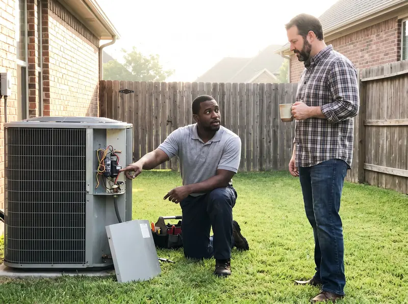

Kansas City HVAC, Done Right
Comfort in Kansas City shouldn't depend on the season. St. Joseph HVAC keeps local homes and businesses comfortable year-round with responsive, experienced heating and cooling service, from same-day AC repair to right-sized system replacements. Our technicians know the housing stock here, which means we've seen how these systems fail locally and we arrive prepared, with the common failure parts already on board. Call (816) 208-0722 and we'll get the fix started.

Full-Service HVAC Care for Kansas City Homes and Businesses
Heating and cooling around here means a wide mix of equipment: aging furnaces on the older streets, high-efficiency heat pumps in recent construction, ductless mini-splits in additions and converted garages, and packaged units on commercial buildings. Our team handles all of it. We have years of field experience, and we've learned how the weather here, the age of local homes, and local code affect the way a system performs over time.
Most homeowners we meet need one of three things: a repair, a replacement, or regular maintenance. Repairs are usually quick: a burned contactor, a dirty flame sensor, a refrigerant leak, or a worn-out blower motor. Replacements get a proper load calculation, not a guess based on the old unit's tonnage, which keeps temperatures even and stops the new equipment from short-cycling its way to an early failure. Maintenance visits include coil cleaning, a refrigerant charge check, safety control testing, and a static pressure reading, which does more than anything else to extend equipment life.
Commercial work makes up a large share of our work as well. We maintain and repair rooftop units, split systems, and ventilation equipment for restaurant kitchens, retail stores, offices, and multi-unit buildings, and we know that every hour of downtime hurts your bottom line. To keep disruptions short, we keep common commercial parts stocked, diagnose quickly, and schedule repairs around your operating hours whenever possible.
Quick Heating and Cooling Help in Kansas City
If your heat or air quits, how fast help shows up matters more than anything else. For that reason, we keep scheduling flexible across the area and answer every call with a live person. Urgent calls typically see a technician within a day, and we treat no-heat and no-cool calls as top priority.
The emergency calls we answer usually follow a pattern. On the cooling side, it's an AC blowing warm air, an outdoor unit that hums without starting, or an evaporator coil iced over. On the heating side, it's a furnace that lights and then shuts down. And any time of year, it's breakers that trip every cycle, plugged condensate drains backing water into the furnace cabinet, and thermostats that have quit. Since our trucks carry capacitors, contactors, igniters, flame sensors, universal control boards, and fittings, the majority of these calls are wrapped up in one visit, at a price you approve before we start.
A few minutes of caution before we arrive can prevent a much bigger repair. An iced-over AC should be shut off at the thermostat with the fan set to "on", which lets the coil thaw safely. Running it frozen can flood the drain pan and damage the compressor. A furnace that keeps short-cycling, or any burning smell, means it's time to kill power at the furnace switch and call us right away.
Getting More Years From Your HVAC System in Kansas City
Routine maintenance is the difference between a system that lasts and one that breaks down in the middle of a heat wave. Our advice for homeowners is a short list: a new filter every one to three months, two feet of clearance around the outdoor condenser, a gentle rinse each spring for the condenser coil, and a professional tune-up every spring and fall, so problems are found while they're still inexpensive.
Take a look at the age of your system. That number tells you a lot. Most well-maintained air conditioners reach 12 to 15 years, furnaces 15 to 20, and heat pumps 10 to 15. If your system is beyond that point and is also showing higher bills, uneven temperatures, or repeated repairs, it's a strong candidate for a planned replacement, and that's almost always cheaper and easier on everyone than a rushed emergency install in peak season.
Minor issues rarely stay small for long. Consider a weak capacitor: replacing it is a short, affordable repair, but left alone for a season, it can take the compressor with it, and suddenly a minor fix becomes a full system replacement. That's why we encourage homeowners to keep our number in their phone and reach out at the first sign of trouble. Catching it early saves money and prevents a miserable night.
Typical Heating & Cooling Issues in Kansas City
HVAC systems in this area face a familiar set of enemies. Hard-running summers push compressors and capacitors to their limits, and humidity and airborne grit slowly foul outdoor condenser coils, cutting efficiency years before the equipment should show its age. Dirty filters quietly starve systems of airflow, freezing evaporator coils in summer and overheating furnace heat exchangers in winter, damage that builds slowly and out of sight.
We also see the full range of component failures in local homes: capacitors that leave the outdoor unit humming but not starting, contactors with pitted points, cracked igniters and dirty flame sensors that lock furnaces out on cold mornings, slow refrigerant leaks that leave the house lukewarm by afternoon, and blower motors worn down by years of restricted airflow. The area's mix of older homes brings undersized returns, leaky duct runs, and rooms the original system was never designed to condition.
Every one of these problems is fixable, and most are much less expensive when caught early. If your system is doing anything unusual, new noises, weak airflow, rooms that won't hold temperature, bills creeping upward, a quick diagnostic visit from our team catches the small problem before it becomes a costly breakdown. Give us a call at (816) 208-0722 to set up a visit.
Trusted Local Service
Living and working here gives us firsthand knowledge of what local homes need to stay comfortable. No matter the brand or system type, our team brings the right tools and proven methods to get your home comfortable again.
Facing a Comfort Emergency?
Reach us now and get an HVAC technician headed to your property today.
Get Help: (816) 208-0722What We Offer
We provide a full range of residential and commercial HVAC services to residents across the community, including:
Let Us Handle Your HVAC System
Pick up the phone and let our specialists take care of the problem for good.
Get Help: (816) 208-0722Why Kansas City Homeowners Trust Us
What homeowners here get with St. Joseph HVAC is simple: fast scheduling, honest diagnosis, and workmanship that holds up. We answer quickly, arrive prepared, and fix the cause, not just the symptom, checking the airflow, charge, and electrical conditions that killed the failed part in the first place. The price is set before work starts, and it stays put. Whether it's a same-day AC repair or a planned system upgrade, the job is done right on the first visit.

Common Heating & Cooling Questions
Also Serving Nearby Communities
Live just outside this area? We likely serve your neighborhood too.